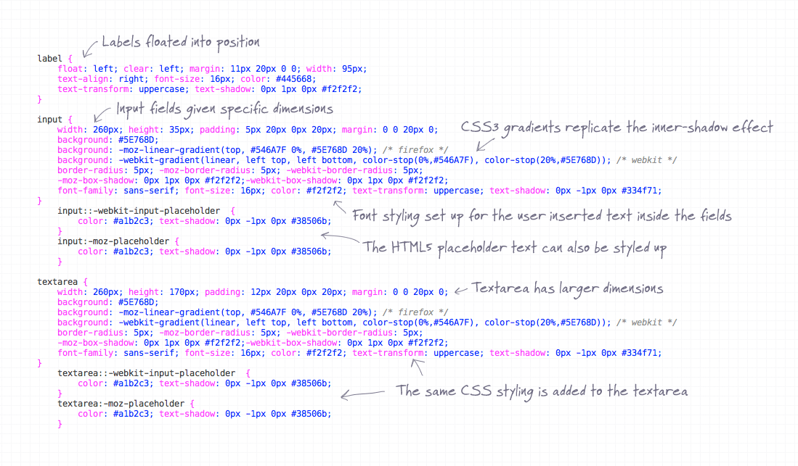

CSS
About CSS
Cascading Style Sheets (CSS) is not a programming langauge. It is a styling language. Provides layout and design to site and is easy to understand. When a browser reads a style sheet, it will format the HTML document according to the information in the style sheet.CSS stands for Cascading Style Sheets CSS describes how HTML elements are to be displayed on screen, paper, or in other media CSS saves a lot of work. It can control the layout of multiple web pages all at once External stylesheets are stored in CSS files

Three types of Cascading Style Sheets.
- Inline Style Sheets
- Adding rules in the style attribute to tags.
- This is good for applying a unique style to a single element.
- Internal Style Sheets
- Internal Styles are defined within the style tag element inside the head section of HTML.
- May be used if one single page has a unique style.
- External Style Sheets
- With an external style sheet, you can change the look of an entire website by changing just one file.
- Each page must include a reference to the external style sheet file inside the link element. The link goes in the head section.